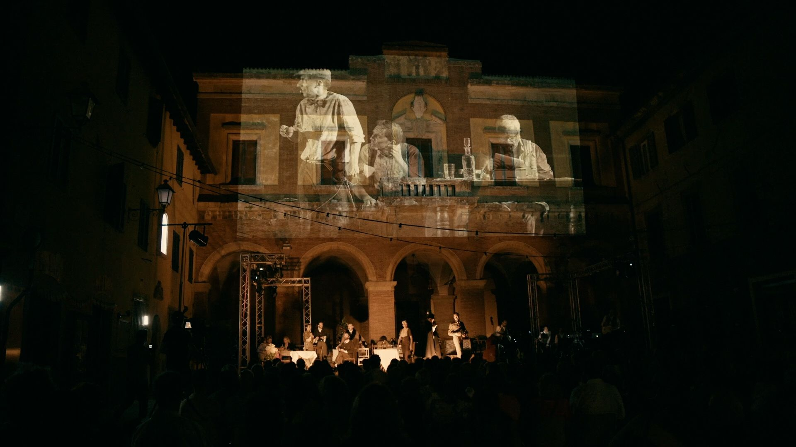
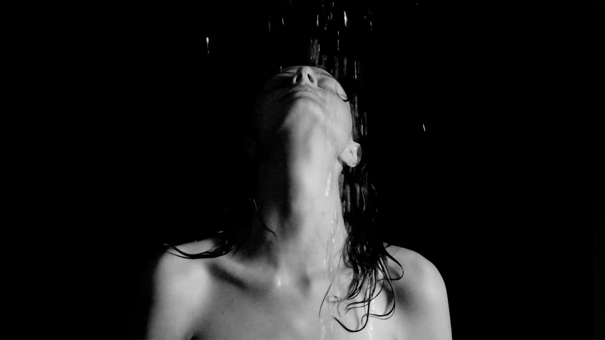
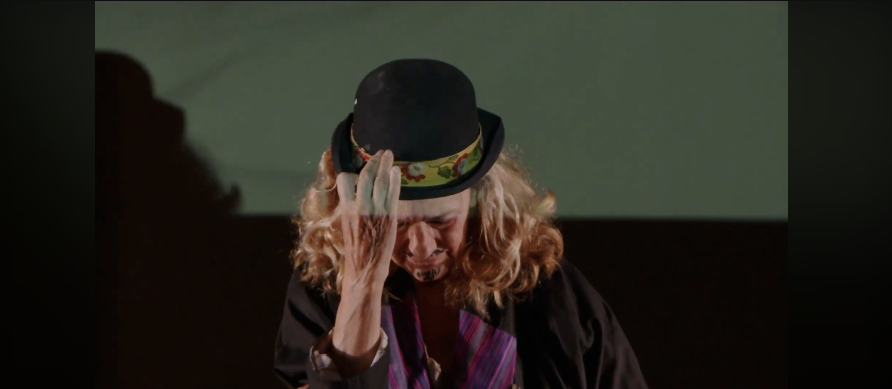
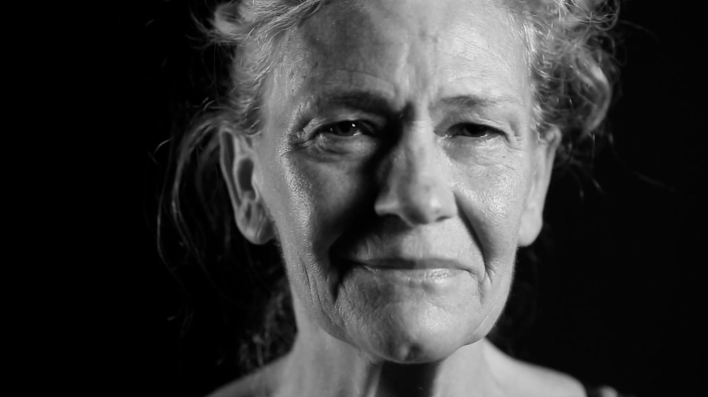
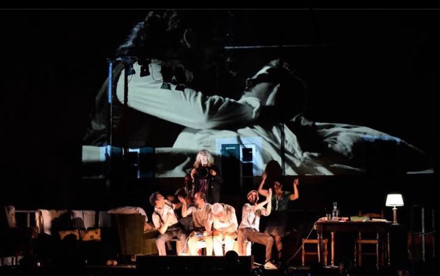

Bohème — la povertà mi è lieta

In questa trasposizione contemporanea, La Bohème si tiene nel luogo di residenza di Dolores, un’anziana attrice che ha rivestito da giovane, nel 1954, il ruolo di Mimì, personaggio da lei particolarmente amato. Dolores non può muoversi ma può ascoltare e vedere dalla sua abitazione. Per l’occasione, vengono a farle visita i compagni di una vita, gli attori che composero quella storica compagnia teatrale. L’opera riunisce dunque il gruppo di artisti e compagni che visse quell’epoca fortunata, fatta di sacrifici, viaggi, amori, incontri, tanto teatro, miseria e nobiltà… attraversando insieme buona parte del ‘900.
Nella casa museo di Dolores, La Bohème spalanca la finestra sui ricordi degli anziani artisti, dei tempi in cui anche loro interpretarono l’opera di Puccini in prosa, insieme alle tante rivisitazioni di celebri autori, in mezzo alla messa in scena di una vita fatta di acrobazie…
Lo spettacolo segue dunque una linea realistica, intrecciata con quella surreale attraverso il tema del ricordo, frammenti di vita e d’arte di un tempo che fu.
La messa in scena è una cucitura tra musica colta, musica contemporanea, teatro, video; in una visione meta teatrale/musicale/cinematografica.
Galleria



